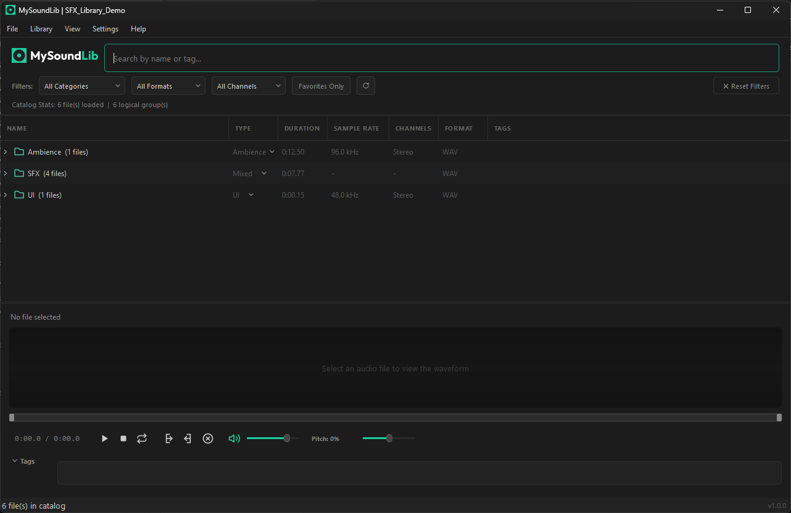
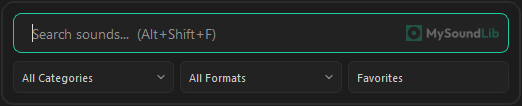
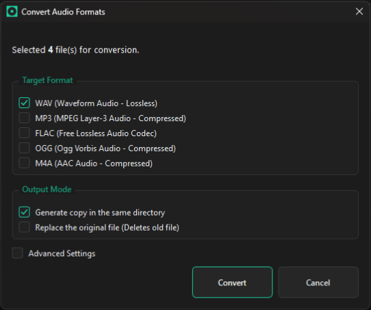
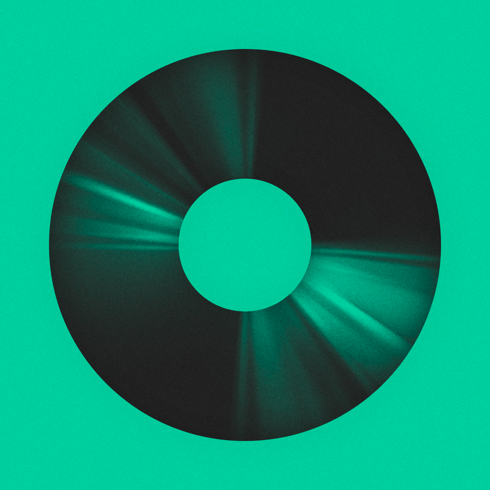

Thousands of scattered and lost sound files? MySoundLib fixes that.
A lightweight, local desktop app to organize your sound library, preview and trim waveforms, and drop audio into your timeline without interrupting your edit.

How It Works
Finding the right audio for your edit usually takes lots of slow steps. MySoundLib turns that into one direct shortcut.
Hit Alt + Shift + F over Premiere, DaVinci, or CapCut. A fast search bar pops up to search your sound libraries without switching windows.
Preview the waveform, select just the transient or tail you need, and drag that exact snippet straight into your timeline.
You keep editing without interruptions. Your project stays clean because only the trimmed sound goes into your timeline.
QuickSearch Overlay
Search sounds over your timeline.
Hit Alt + Shift + F over Premiere, DaVinci, or CapCut. Search, audition sounds instantly, and drop audio straight into your track without leaving your editor.
- 01 Global hotkey: pops up over any editor.
- 02 Fast search: indexes large local libraries in milliseconds.
- 03 Quick filters: filter by format, channels, or custom tags.

Precision Trimming
Preview the waveform, drag only the section you need.
Preview the sound instantly. Drag across the waveform to select just the transient, riser impact, or tail, and drop only that selection onto your timeline.
- 01 In-app trimming: cuts out the part you need before dragging to your timeline.
- 02 Pitch & speed controls: adjust playback pitch on the fly before exporting.
- 03 Clean timeline bin: keeps your project files lightweight.
Built-in Converter
Audio format conversion.
If an editor rejects a .flac or .ogg file, convert it to .wav inside the app before dragging.
- 01 Multi-format converter: WAV, MP3, FLAC, OGG, and M4A supported.
- 02 Batch conversion: convert individual tracks or entire folders in seconds.

Works with whatever you already use to edit
No plugins needed. If your software accepts dragged files, it works directly.
The tedious loop every video editor gets stuck in
Finding one sound effect often turns into a chore:
You download another 5GB sound pack that claims to be "super organized."
You open the folder and find whoosh_sub_final_v2.wav buried under six subfolders.
You double-click it, waiting for your default media player to slowly boot up.
The sound is 12 seconds long, but you only need the tiny transient at the tail end.
You drag the entire raw file into your project bin, clutter your timeline, slice it down, and repeat 80 times per edit.
Eventually, you give up and just use the same 4 sounds sitting on your desktop.
I spent years digging through messy sound packs. Then I built the tool I actually needed.Why I Built MySoundLib

About
Built by a video editor, for video editors
I spend most of my workdays editing in Premiere Pro and After Effects. Over the years, my sound library grew to tens of gigabytes across messy folders. Most dedicated audio managers were either built for large post-production studios or required monthly subscriptions just to search local files.
I built MySoundLib to solve that bottleneck on my own edits. The goal was simple: hit a shortcut over your editor, find what you need, and drop the exact slice right onto your timeline. Your files stay on your machine, and you own the app for life.
Frequently Asked Questions
Questions & Answers
Which editors and DAWs are supported?
Premiere, DaVinci Resolve, CapCut, After Effects, Final Cut, and Vegas Pro. If your software accepts files dragged from your desktop, it works.
Does dragging snippets modify my original audio files?
No. Trimming is non-destructive. The app creates a temporary clip for your timeline and leaves your original audio files untouched.
Is the $19 purchase a lifetime license or subscription?
One-time payment. You pay $19 once and own MySoundLib with all v1 updates included. No subscriptions.
How does the QuickSearch Overlay work?
Press Alt + Shift + F (or Cmd + Shift + F on macOS) while editing. The search bar opens over your screen, you preview sounds immediately, drag the clip into your timeline, and return to editing.
Are my sound files uploaded anywhere?
No. MySoundLib runs entirely on your computer. Your audio libraries, folder paths, and project files never leave your machine.
Which audio formats can it read and convert?
WAV, MP3, FLAC, OGG, OPUS, AIFF, and M4A/AAC. It also includes batch conversion to WAV.
Can I organize sounds into separate libraries?
Yes. You can create separate libraries for personal projects, client work, or specific sound packs.
How many machines can I activate with one license?
Each license can be used on up to 5 personal computers (such as your desktop workstation and laptop).
Does MySoundLib come with sound effects or music?
No. MySoundLib is purely an audio manager and workflow tool. It indexes and searches audio files already on your computer or sound packs you buy or download separately. We do not distribute or license audio files.
Stop digging through folders. Keep editing.
Lifetime license, zero subscriptions, and 100% offline on your machine. Compatible with Windows, macOS, and Linux.